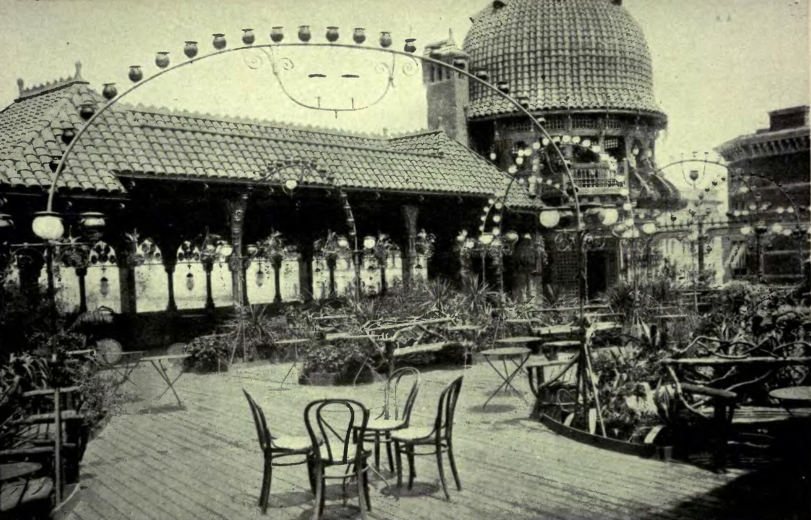
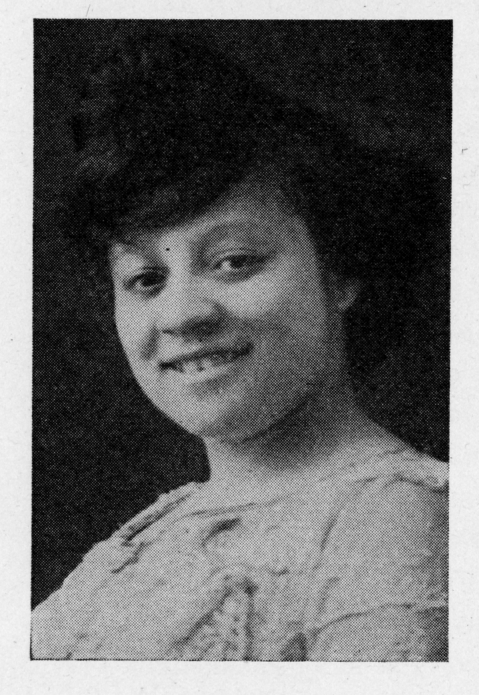
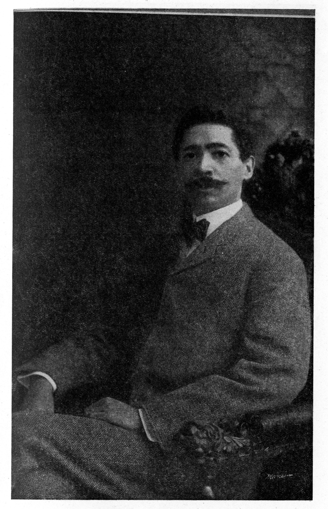
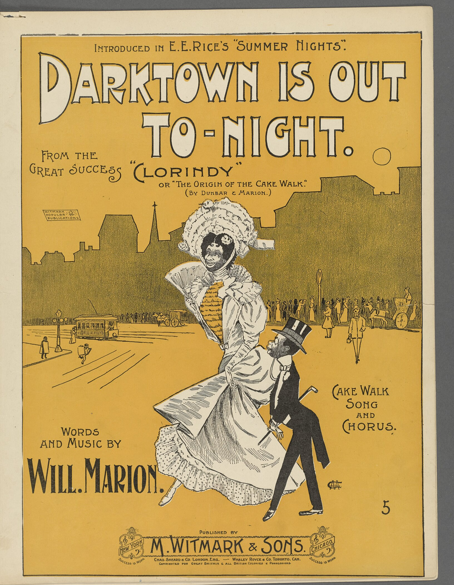
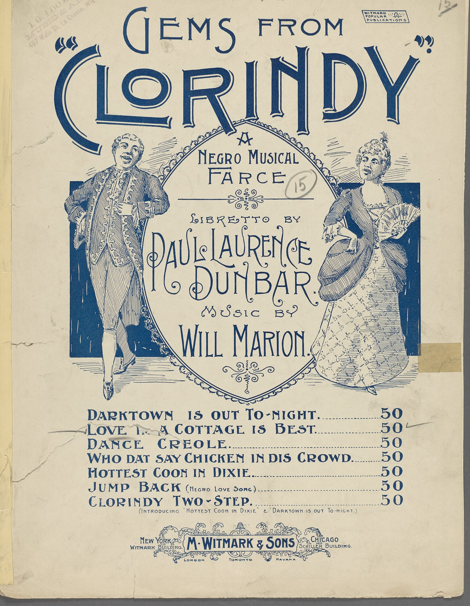
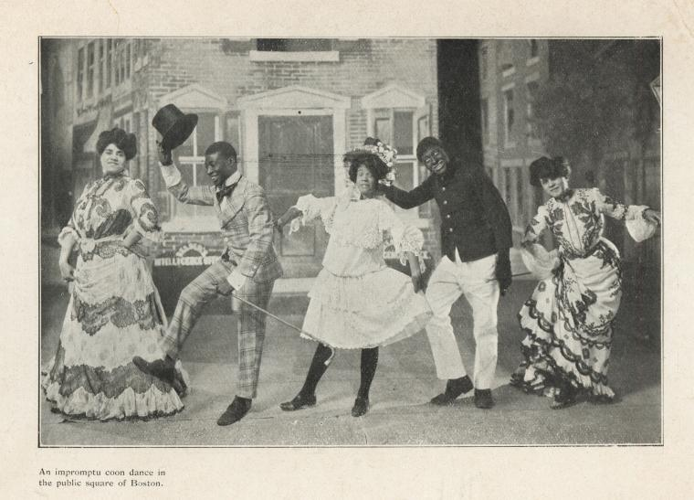

Abbie Mitchell
1884–1960 · THE DIVA
Born to a Jewish father and a Black mother, she walked onto Broadway at fourteen and sang for a king at nineteen. Decades later she was the first voice to sing "Summertime" in Porgy and Bess.

A novel based on a true story
The Life and Times of Abbie Mitchell and Will Marion Cook
In the summer of 1898, a fourteen-year-old soprano climbed to the roof of the Casino Theatre to audition for the most arrogant man on Broadway. He hired her for thirty dollars a week. What followed was a marriage, a musical revolution, and a story their own family did not know until they found it in a box.
A legendary love affair. Inarguable genius. Ground-breaking art.
After his father died, Jacques Cook found a large box in the house, stuffed with hundreds of pages of prose. The pages told the story of his grandparents: two Black artists, one generation out of slavery, who reached the heights of American music while Jim Crow tried to stop them at every turn.
Will Marion died before Jacques was born. Abbie died when he was a boy. The box gave them back to him, and this book gives them to everyone else. How the book came to be.
"You have a glorious voice, little girl, plenty of fire, but you can't sing a damn thing!"Will Marion Cook to Abbie Mitchell, July 12, 1898. From the prologue, The Audition.


1884–1960 · THE DIVA
Born to a Jewish father and a Black mother, she walked onto Broadway at fourteen and sang for a king at nineteen. Decades later she was the first voice to sing "Summertime" in Porgy and Bess.
1869–1944 · THE MAESTRO
A violin prodigy trained in Berlin and by Dvořák, he wrote the first all-Black Broadway musical, took Black American music to Europe, and taught a young Duke Ellington.
Sousa's Band recorded a Clorindy number two years after the show opened on the Casino roof. It is the closest thing we have to what Abbie heard.


